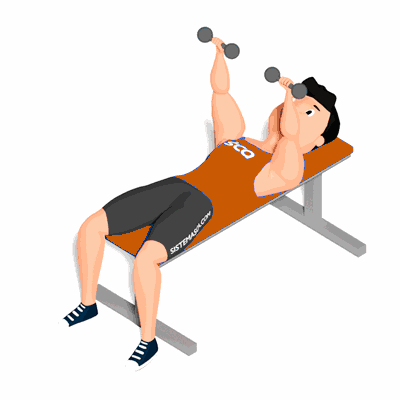

Tate Press

O exercício tem como objetivo construir massa no tríceps para fortalecer os ligamentos do cotovelo auxiliando na execução de outros exercícios de braço.
Ficha Técnica
Tipo: Musculação
Grupo Muscular: Tríceps
Aparelho: Nenhum
Músculos: Nenhum
Como realizar
- Pegue num par de halteres e deite-se num banco plano;
- Posicione os halteres acima dos ombros com os braços estendidos e com um agarre em semi-pronação;
- Baixe os halteres em direção ao peitoral dobrando os cotovelos;
- Estenda os braços e repita durante o número de repetições definido pelo professor.
 RC STORE
RC STORE